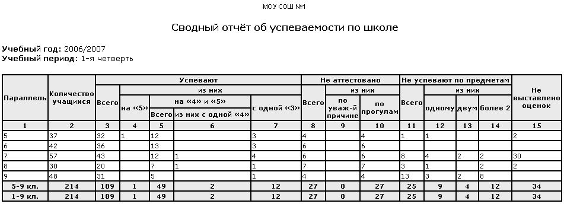

Данные считаются по классам, суммируются по ступеням обучения. Ниже приведён пример отчёта для 5-балльной шкалы (хотя отчёт работает не только для 5-балльной шкалы).
В отчете выводятся следующие данные:
| · | количество успевающих учеников (с дифференциацией данных - "на 5", на "4" и "5", кроме того, данные по количеству учеников с одной "4" и одной "3" за учебный период);
|
| · | количество неаттестованных учеников (по уважительной причине и по прогулам);
|
| · | количество невыставленных оценок.
|
Как правильно учитывать учащихся, неаттестованных по уважительной причине и по неуважительной причине?
Графа «Не аттестовано» разделена на три графы: Всего, По уважительной причине и По прогулам.
Отметка "н/а" ставится тем учащимся, которые неаттестованы по НЕуважительной причине хотя бы по одному предмету; отметка "осв." – тем, которые неаттестованы по ВСЕМ предметам по уважительной причине (болезнь и т.п.). Поэтому:
| · | в первой графе («Всего н/а») считается общее кол-во учащихся,
|
| · | в графе «по уважительной причине» считается кол-во учащихся, имеющих отметку "осв." по всем предметам,
|
| · | в графе «по прогулам» считается кол-во учащихся, имеющих отметку "н/а" хотя бы по одному предмету.
|
Как рассчитывается графа "Не выставлено оценок"?
При расчёте этой графы за учебный период:
1) определяется состав классов на конец выбранного учебного периода;
2) считается, что оценка не выставлена, если ученик связан с предметом в этом периоде и не имеет оценки по этому предмету.
При расчёте этой графы по итогам года учитывается, что некоторые предметы могут завершиться раньше последнего учебного периода. Поэтому используется другой алгоритм:
1) определяется состав классов в максимальном учебном периоде для каждого предмета (например, если предмет "Математика" преподаётся в течение всех 4 четвертей, то состав класса по Математике определяется на 4-ю четверть; если же предмет "История России" преподаётся полгода, то состав класса по Истории России определяется на конец 2-й четверти);
2) считается, что годовая оценка не выставлена, если ученик связан с предметом в периоде, максимальном из всех периодов для этого предмета, и не имеет оценки по этому предмету.
Если ученик зачислен одновременно в обе подгруппы по предмету: нужно выставлять годовую оценку только в той подгруппе, в которой ученик находится на момент окончания преподавания предмета в году. И выставлять годовую отметку в обеих подгруппах не требуется.
Почему ученик, выбывший в течение учебного года, учитывается в количестве учеников за период "Год"?
"Сводный отчёт об успеваемости по школе" считает, что ученик входит в состав класса на конец года, если верно одно из условий:
| · | если ученик присутствует в классе на конец года,
|
| · | если ученик выбыл, но имеет хотя бы по одному предмету оценку за последний период его преподавания. (Например, предмет преподавался только в течение 1 и 2 четвертей, ученик получил по нему отметку за 2 четверть, а затем выбыл.)
|
См. также Правила учёта количества учащихся в отчётах.
Пример отчёта:
